Министерство
монтажных и специальных строительных работ СССР
(Минмонтажспецстрой СССР)
УКАЗАНИЯ
ПО РАСЧЕТУ ЖЕЛЕЗОБЕТОННЫХ ДЫМОВЫХ ТРУБ
ВСН 286-72
ММСС СССР
Москва 1972
В настоящих Указаниях приведен расчет железобетонных дымовых труб на совместное действие нагрузок от собственного веса и ветра и воздействия температуры (нагрев ствола отходящими газами и солнечной радиации), а также приведены новые данные по определению крена и осадок фундаментов дымовых труб в зависимости от их высоты.
Указания разработаны институтами НИИЖБ, ЦНИИСК им. Кучеренко, НИИОСП Госстроя СССР и ВНИПИ Теплопроект Минмонтажcпецстроя СССР.
Участие в разработке приняли: от НИИЖБ - докт. техн. наук А.Ф. Милованов, канд. техн. наук Б.А. Альтшулер; от ЦНИИСК им. Кучеренко - доктора техн. наук Б.Г. Коренев, А.Р. Ржаницын, А.В. Геммерлинг, кандидаты техн. наук М.П. Барштейн, В.Г. Власов, инж. П.К. Шкляревский; НИИОСП - докт. техн. наук К.Е. Егоров; от ВНИПИ Теплопроект канд. техн. наук И.А. Шишков, инженеры В.Г. Лебедев, В.В. Сидоров, В.С. Першко.
Редакторы Инж. Д.А. Аппак
Инж. И.М. Рейнов
|
Минмонтажспецстрой СССР |
Ведомственные строительные нормы |
ВСН 286-72 |
|
Указания по расчету железобетонных дымовых труб |
ММСС СССР |
1. ОБЩИЕ ПОЛОЖЕНИЯ
1.1. Настоящие указания распространяются на расчет монолитных железобетонных дымовых труб высотой более 150 м с ненапрягаемой арматурой.
Примечания: 1. Железобетонные дымовые трубы высотой до 150 м должны рассчитываться по «Инструкции по проектированию железобетонных дымовых труб». М., Госстройиздат, 1962, при этом ветровые нагрузки следует принимать по действующей главе СНиП «Нагрузки и воздействия. Нормы проектирования».
2. Монолитные железобетонные дымовые трубы высотой более 150 м с ненапрягаемой арматурой далее в тексте «Указаний» будут именоваться сокращенно «трубы».
1.2. Расчет труб, возводимых в сейсмических районах, должен вестись с учетом требований главы СНиП II-2.12-69 «Строительство в сейсмических районах. Нормы проектирования».
1.3. Расчет железобетонных плит для фундаментов дымовых труб должен выполняться согласно «Инструкции по расчету статически неопределимых железобетонных конструкций с учетом перераспределения усилий» 2-е издание (М., Госстройиздат, 1961).
1.4. При расчетах труб кроме настоящих Указаний надлежит соблюдать требования глав СНиП II-В.1-62* «Бетонные и железобетонные конструкции. Нормы проектирования» и II-В.7-67 «Бетонные и железобетонные конструкции, предназначенные для работы в условиях воздействия повышенных и высоких температур. Нормы проектирования».
|
Внесены
|
Утверждены
27 января 1972 г. |
Срок
введения |
2. СТАТИЧЕСКИЙ РАСЧЕТ ТРУБЫ
Общие указания
При расчете по первой группе предельных состояний необходимо учитывать одновременное действие нагрузки от собственного веса, расчетной ветровой нагрузки, а также влияние температуры отводимых газов; при расчете по второй группе предельных состояний - одновременное действие собственного веса, нормативной нагрузки от ветра, а также влияние температуры отводимых газов и солнечной радиации.
Примечание. Собственный вес трубы принимается без коэффициентов перегрузки.
Предельному состоянию по потере несущей способности вертикальных и горизонтальных сечений трубы отвечает образование пластического шарнира, в том числе:
- в горизонтальных сечениях трубы с наветренной стороны пластическому шарниру соответствует состояние, когда зона текучести растянутой арматуры, равномерно расположенной по периметру кольца, доходит до центра тяжести арматуры растянутой зоны (рис. 1); с подветренной стороны этому соответствует полное использование прочности сжатой зоны бетона;
- в вертикальных сечениях предельному состоянию соответствует текучесть растянутой арматуры.
Вторая группа предельных состояний вертикальных и горизонтальных сечений трубы характеризуется достижением трещинами предельной величины раскрытия, равной: для верхней трети высоты трубы - 0,1 мм; для остальной части трубы - 0,2 мм.
2.2. Определение напряжений от температурных воздействий следует производить при наибольшем значении температуры отводимых газов, расчетной температуре наружного воздуха (средней температуре наиболее холодной пятидневки) и наибольшем значении коэффициента теплоотдачи наружной поверхности трубы (aн).
2.3. Для армирования труб принимается, как основная, стержневая арматура периодического профиля классов А-II и А-III. Расчетные характеристики арматуры приводятся в табл. 5 приложения 1.
Рис. 1. Расчетная схема горизонтального сечения трубы и эпюра напряжений
ПРИНЯТЫЕ ОБОЗНАЧЕНИЯ
yа - расстояние от центра трубы до центра тяжести растянутой зоны.
yб - расстояние от центра трубы до центра тяжести сжатой зоны
rв - внутренний радиус сечения.
rа - радиус арматуры.
rн - наружный радиус сечения.
r - расчетный радиус, равный
b - половина угла сжатой зоны.
sан - напряжение в растянутой арматуре.
sбн - сжимающие напряжения в бетоне.
h - толщина стенки трубы.
h0 - полезная высота сечения стенки трубы.
2.4. Бетон для труб принимается проектной марки по прочности на сжатие не ниже 300 на портландцементе. Марки бетона по морозостойкости и водонепроницаемости следует принимать в соответствии с требованиями нормативных документов. Расчетное сопротивление бетона сжатию принимается равным 0,9Rпр. с учетом условий работы бетона в трубах.
Определение расчетной ветровой нагрузки
2.5. Трубы рассчитываются на ветровую нагрузку с учетом 3-х форм свободных колебаний.
2.6. Расчетная ветровая нагрузка Рik (т), действующая на участок трубы k (рис. 2), при колебаниях его по i-ой форме (i =1, 2, 3) (труба условно разбивается по высоте на r участков с текущим номером j = 1,2... k…r, при этом масса j-го участка и действующая на него ветровая нагрузка принимаются сосредоточенными в середине участка с абсциссой xj) определяется по формуле:
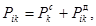
где 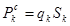
qk = q0kkch - расчетное давление ветра (в т/м2) для середины k-го участка;
q0 - нормативный скоростной напор ветра в т/м2 для высоты над поверхностью земли до 10 м, принимаемый по табл. 9 п.6.1 главы СНиП II-А.11-62 «Нагрузки и воздействия. Нормы проектирования»;
kk - поправочный коэффициент на возрастание скоростного напора для середины данного участка, принимаемый по табл. 10 главы СНиП II-А.11-62;
c = 0,7 - аэродинамический коэффициент для звена k;
h - коэффициент перегрузки: для труб высотой от 150 до 300 м - 1,4; выше 300 м - 1,5;
Sk - площадь проекции k-го звена (м2) на плоскость, перпендикулярную ветровому потоку;
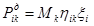
Mk -
масса k-го звена 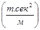
hik - приведенное ускорение (м/сек2) середины k-го звена при колебаниях трубы по i-ой форме
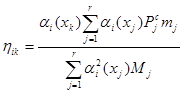
В формуле (2) ai(xk) и ai(xj) - относительные ординаты i-ой формы свободных колебаний трубы в рассматриваемой точке c абсциссой xk и во всех точках с абсциссами xj (j =1,2...k...r), где сосредоточены массы Mj;
mj - коэффициент пульсации скоростного напора для середины j-го участка, определяемый по табл. 12 главы СНиП II-А.11-62;
xi - коэффициент динамичности, зависящий от периода i-ой формы свободных колебаний и от логарифмического декремента колебаний трубы, определяемый по графикам на рис. 3.
Рис. 2. Схема конструкции дымовой трубы с железобетонной оболочкой и четырьмя внутренними металлическими стволами-газоходами:
1 - железобетонная оболочка трубы; 2 - светофорная площадка; 3 - сплошная металлическая площадка; 4 - металлический ствол-газоход (cамонесущий); dcp=12 мм; 5 - фундамент под трубу
Примечание. Металлический ствол 4 свободно опирается в точке а на металлическую площадку 3
Расчет горизонтальных сечений трубы
2.7. Усилия в горизонтальных сечениях трубы определяются методом последовательных приближений.
Окончательными являются усилия или прогибы n-го приближения, которые отличаются от n-1 приближения не более, чем на 5 %.
При расчете горизонтальных сечений трубы по первой и второй группам предельных состояний изгибающий момент определяют от соответствующих нагрузок и воздействий, указанных в п. 2.1. В необходимых случаях принимают наибольший изгибающий момент с учетом проверки трубы на резонанс.
2.8. При расчете трубы по первой группе предельных состояний прогибы и усилия определяют в следующем порядке:
1. Для всех сечений трубы задаются толщиной стенки и сечением вертикальной арматуры на 1 пог. м длины окружности трубы.
Рис. 3 Коэффициенты динамичности
а - для гибких стальных конструкций (логарифмический декремент колебаний d » 0,10)
б - для металлических и деревянных сооружений (d » 0,15)
в - для железобетонных и каменных сооружений (d » 0,30)
2. Определяют нормальные силы (от собственного веса ствола, футеровки, площадок и т.п.) и изгибающие моменты от статических расчетных ветровых нагрузок и динамических воздействий порывов ветра.
В первом приближении изгибающие моменты определяют без учета нормальных сил по формуле:
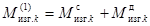
где M - изгибающий момент в k-ом сечении трубы от расчетных статических ветровых нагрузок Pj;
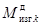
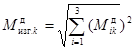
В
формуле (4) 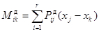
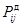
3. Определяют напряжение в арматуре (sан) и бетоне (sбн) соответственно согласно п.п. 2.13 и 2.14.
4. Определяют кривизну оси трубы по формуле:
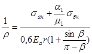
при b < 90° кривизну оси трубы допускается определять по формуле
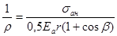
5.
Принимая эпюру кривизны первого приближения за фиктивную нагрузку, определяют
прогибы трубы - 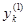
6.
Вычисляют дополнительный момент ( 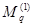
7.
Во втором приближении определяют перемещения трубы по суммарному изгибающему
моменту ( 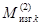 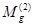
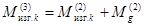
2.9. Для определения напряжений в сечениях трубы предварительно определяют центральный угол 2b, ограничивающий сжатую зону (см. рис. 1).
Величину b определяют в зависимости от a1 и С0 по графикам, приведенным в приложении 4 на рис. 11.
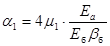
В формуле (7) bб - определяется по табл. 3 главы СНиП II-В.7-67 или по опытным данным в зависимости от средней температуры сечения стенки
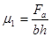
где b - ширина полосы, равная 100 см
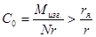
Для неослабленного сечения
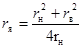
где rн, rв - соответственно наружный и внутренний радиусы стенки трубы.
2.10. При расчете по второй группе предельных состояний прогиб трубы определяют от суммарного действия нормативной ветровой нагрузки, крена фундамента, солнечной радиации и нормальных сил.
Прогиб f верха трубы от действия солнечной радиации принимают равным 0,005H, где H - высота трубы. Для упругой линии трубы при учете солнечной радиации принимается парабола вида:
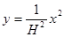
2.11. Суммарный изгибающий момент от нормативных нагрузок определяют путем деления расчетного момента на коэффициент перегрузки:
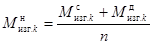
2.12. В случае, когда равнодействующая нормальных сил при действии ветровой нагрузки и при одновременном воздействии на сечение температуры не выходит из ядра сечения, прогиб трубы рекомендуется определять как для консольной балки с переменной жесткостью по формуле:
B = bбEбI; (13)
В формуле (13):
bб - определяют в зависимости от средней температуры стенки трубы в рассматриваемом сечении:
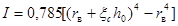
где xc- средняя относительная высота сжатой зоны сечения стенки, определяется по формуле (31).
2.13. Напряжение в растянутой арматуре трубы определяют по формуле:
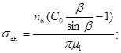
где 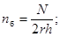
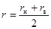
Напряжение в арматуре sан должно удовлетворять условию:
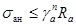
В формуле (17)
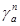
Ra - по табл. 5 приложения 1 данных «Указаний».
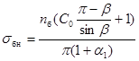
При наличии в расчетном сечении трубы ослабления проемом (см. рис. 4) напряжения в трубе следует определять по графику рис. 12 приложения 4.
Рис. 4. Расчетная схема сечения ствола с проемом в сжатой зоне:
q - половина угла проема в трубе; x - высота сжатой зоны
2.15. При совместном действии внешних нагрузок и температуры суммарное напряжение в бетоне с подветренной стороны сечения определяют по формуле:
sб = sбн + sбt (19)
где sбн - напряжение в бетоне от расчетных нагрузок;
sбt - напряжение в бетоне, вызванное воздействием температурного перепада, определяемое по формуле:
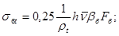
В формуле (20):
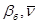
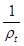
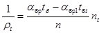
где aбр и aбр1- коэффициенты суммарной температурной деформации бетона, принимаемые по табл. 6 главы СНиП II-В.7-67 в зависимости от температуры соответственно наиболее и наименее нагретых граней сечения (tб и tб1,);
nt - коэффициент перегрева, принимаемый при расчете на прочность равным 1,1.
Примечание. Перепады температуры в железобетонной стенке трубы определяются расчетами температурного режима ограждающих конструкций.
Суммарное напряжение в бетоне должно удовлетворять условию:
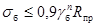
В формуле (22):
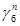
2.16. Ширину раскрытия горизонтальных трещин определяют в зависимости от изгибающего момента, вызванного комбинацией нагрузок и воздействий, отвечающих второй группе предельных состояний (см. п. 2.1). По величине суммарного изгибающего момента по формуле (9) определяют величину С0.
Если С0 оказывается менее rя/r, то горизонтальные трещины в трубе определяют только от температурного перепада в трубе.
Если
С0 равно или более rя/r, то по найденному суммарному изгибающему моменту вычисляют 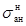
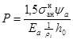
где
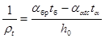
В формуле (24):
aбр - коэффициент суммарной температурной деформации бетона, определяемый по табл. 6 главы СНиП II-В.7-67 в зависимости от температуры нагретой поверхности бетона;
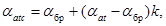
В формуле (25):
aat - коэффициент температурного расширения арматуры, определяемый по табл. 8 главы СНиП II-В.7-67 в зависимости от температуры арматуры;
aбр - определяют по температуре бетона на уровне арматуры;
k - коэффициент, зависящий от процента армирования сечения продольной арматурой, определяемый по табл. 9 главы СНиП II-В.7-67;
- напряжение в арматуре от нормативных нагрузок, определяемое по формуле (15).
Значение коэффициента ya в формуле (23) определяют по формуле:
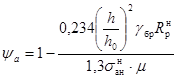
Значение jбр находят по табл. 3 главы СНиП II-В.7-67 или по опытным данным в зависимости от температуры бетона на уровне арматуры.
Коэффициент yа должен приниматься не более 1 и не менее значения, определяемого по формуле:
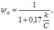
где k и С вычисляют по формулам соответственно:
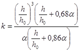
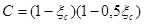
или определяются по графикам на рис. 5 и 6. Значение x определяется по формуле (31);
a - коэффициент, принимаемый при определении x.
2.17. Если P ³ 1, тогда напряжение в арматуре, принимаемое в дальнейшем для расчета раскрытия трещин, равно 1,5
Если Р < 1, напряжение в арматуре satc, принимаемое в дальнейшем расчете, определяется по формуле:
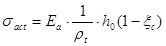
где 1/rtc - определяется по формуле (24).
Относительную высоту сжатой зоны (xc) определяют по формуле:
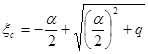
где
Значение коэффициента bб определяется в зависимости от температуры наиболее нагретой поверхности бетона.
Величина должна удовлетворять условию sa t£ gaRa
где Ra - принимается по табл. 5 приложения 1.
Рис. 5. Значения коэффициента С = (1- xс)(1-0,5xс) в зависимости от относительной высоты сжатой зоны xс.
Рис. 6. Значения коэффициента k в зависимости от a для разных значений h/h0:
1 - 1,05; 2 - 1,10; 3 - 1,20; 4 - 1,30
Значение коэффициента ya определяют по формуле:
Предельные минимальные значения коэффициента ya вычисляются по формуле (27).
2.18. Ширину раскрытия горизонтальных трещин определяют по формуле:
где sac - среднее напряжение в растянутой арматуре, принимаемое при расчете ширины раскрытия трещин большим из двух значений:
sac = sact (34)
или
где yа - определяется по формуле
где gбр - определяется по табл. 3 главы СНиП II-В.7-67 или по опытным данным в зависимости от температуры бетона на уровне арматуры.
Расстояние между трещинами lт подставляемое в формулу (33), определяют:
при sac принимаемому по формуле (35)
при sac принимаемому по формуле (34)
где
В формуле (40): bб- определяют по температуре бетона на уровне арматуры;
, (41)
где S - периметр сечения арматуры по номинальному диаметру без учета выступов ребер;
для арматуры одного диаметра:
(42)
h - коэффициент, зависящий от вида растянутой арматуры, принимаемый согласно главы СНиП II-В.1-62*.
2.19. В формулах (26, 32, 36, 37 и 39) значение m определяется в зависимости от количества лишь той арматуры, которая устанавливается у наружной поверхности трубы, т.е.
В формуле (43):
Fab - площадь арматуры, устанавливаемой у внутренней поверхности трубы.
2.20. При расчете трубы ее гибкость рекомендуется предварительно принимать с отношением с последующей проверкой устойчивости трубы согласно приложению 3, где Н - полная высота ствола трубы (или отдельных его участков).
Дн - наружный диаметр основания ствола (или его отдельных участков).
2.21. В многоствольных трубах (см. рис. 2) стальные стволы и металлоконструкции, расположенные внутри ж.б. ствола, учитываются только при определении масс отдельных их участков. Устойчивость самих стальных стволов проверяется по главе СНиП II-В.3-62 «Стальные конструкции. Нормы проектирования».
При прогибах трубы от горизонтальных воздействий необходимо определить в стальных стволах изгибающие моменты от заданных перемещений. По найденным моментам определяются продольные нормальные напряжения в сечениях стволов () и напряжения сжатия от веса стальных стволов и их футеровок. Согласно главе СНиП II-В.3-62 п.п. 6.17-6.20 суммарные сжимающие напряжения от продольных сил и моментов не должны превышать расчетных осевых напряжений s01.
Расчет вертикальных сечений
2.22. Расчет вертикальных сечений производят по формуле:
(44)
где Ra - принимается по табл. 5 приложения 1.
sact - определяется по формуле (30), в которой величина xc определяется по формуле (31) при q = a. Значение xa вычисляется по формуле (32).
Ширина раскрытия вертикальных трещин определяется по формулам (33, 34 и 38).
2.23. Расчет внутренней кольцевой арматуры производится на перепад температуры не менее 25°, аналогично расчету наружной кольцевой арматуры.
Поверочный расчет на резонанс
2.24. Для дымовых труб со слабой коничностью (не более 1,2 %) кроме расчета на скоростной напор ветра с учетом его порывов необходим также поверочный расчет на резонанс.
Критическая скорость ветра, вызывающая резонансные колебания трубы в направлении, перпендикулярном ветровому потоку, определяется по формуле:
В формуле (45):
Т - период основного тона свободных колебаний трубы (сек);
dв - наружный диаметр верхнего сечения трубы (м).
Интенсивность аэродинамической силы F(x,t), действующей на трубу, определяется по формуле:
F(x,t) = F(x)sin wt (46)
где F(x) = F0a(x) - амплитуда аэродинамической силы, действующей на уровне с абсциссой «x»;
a(x) - относительная ордината первой формы свободных колебаний;
F0 = 0,02v2dв - амплитуда аэродинамической силы, соответствующая свободному концу сооружения (кг/м);
- круговая частота.
2.25. Резонансная амплитуда колебаний (yр(x) и изгибающий момент в сечении трубы с абсциссой «x» определяется по формулам:
(47)
(48)
где - прогиб и изгибающий момент от статически приложенной нагрузки;
d = 0,3 - логарифмический декремент колебаний;
0,8 - коэффициент, учитывающий малую вероятность возникновения плоскопараллельного потока по высоте трубы.
Расчетный изгибающий момент в рассматриваемом сечении трубы определяется по формуле:
(49)
где - определяется по пункту 2.7 настоящих "Указаний", при этом величины и определяются по формулам пункта 2.6 в зависимости от
3. Расчет оснований под фундаменты труб
Определение нормативного давления на основание
3.1. Исходными данными для расчета оснований под фундаменты труб должны служить материалы инженерно-геологических изысканий.
В соответствии с требованиями главы СНиП II-Б.1-62* "Основания зданий и сооружений. Нормы проектирования" расчет оснований, сложенных нескальными грунтами, производится по второй группе предельных состояний (по деформациям). В тех случаях, когда основание сложено скальными грунтами, расчет может быть произведен по первой группе предельных состояний (по несущей способности).
3.2. Нормативные давления на основания следует определять по формуле:
где h - глубина заложения фундамента от планировочной отметки до подошвы фундамента (м); в случае кольцевого фундамента величина h принимается равной высоте подсыпки внутри стакана фундамента и должна быть не менее высоты кольцевой плиты;
b - диаметр круглого фундамента или ширина кольца при кольцевом фундаменте (м);
g0 - средний объемный вес грунта (т/м3), залегающего в пределах глубины h и ниже - на одну четверть диаметра или ширины кольца фундамента h + 1/4b;
Сн - нормативное удельное сцепление грунтов (т/м2), залегающих в пределах глубины h + 1/4b;
m - коэффициент условия работы, обычно принимаемый равным единице, за исключением случаев заложения фундаментов в водонасыщенных грунтах типа мелкозернистых и пылеватых песков, для которых берется соответственно m = 0,8 и m = 0,6;
А, В, Д - коэффициенты, зависящие от среднего значения нормативного угла внутреннего трения (jн в градусах) грунтов, залегающих в пределах h + 1/4b, принимаемые по табл. 1.
В случае применения железобетонной плиты в виде кольца с соотношением радиусов r1/r2 ³ 0,5 (внутреннего к внешнему) давления на грунт определяются с коэффициентами А, В, Д, вычисленными для ленточных фундаментов при ширине кольца b = r2 - r1; при r1/r2 < 0,5 давления на основании определяются как для круглого фундамента, считая условно b = 2r2.
Расчетные характеристики сжимаемого основания
3.3. Основными расчетными характеристиками сжимаемого основания конечной толщины является величина сжимаемой толщи Н и модуль деформации "Е".
3.4. Толщину сжимаемого слоя основания круглого фундамента допускается принимать равной половине диаметра (H = b/2) для глинистых грунтов и одной трети диаметра (Н = b/3) для песчаных грунтов. В случаях, когда ниже сжимаемого слоя имеются прослойки слабых грунтов, величину сжимаемой толщи основания следует определять в соответствии с главой СНиП II-Б.1-62.
Таблица 1
|
Коэффициенты в формуле (51) |
||||||
|
для круглых фундаментов |
для ленточных фундаментов |
|||||
|
Aк |
Вк |
Дк |
Ал |
Вл |
Дл |
|
|
0 |
0 |
1 |
3,37 |
0 |
1 |
3,14 |
|
2 |
0,03 |
1,12 |
3,56 |
0,03 |
1,12 |
3,32 |
|
4 |
0,06 |
1,26 |
3,77 |
0,06 |
1,25 |
3,51 |
|
6 |
0,10 |
1,42 |
4,00 |
0,10 |
1,39 |
3,71 |
|
8 |
0,15 |
1,60 |
4,25 |
0,14 |
1,55 |
3,93 |
|
10 |
0,20 |
1,80 |
4,51 |
0,18 |
1,73 |
4,17 |
|
12 |
0,26 |
2,02 |
4,81 |
0,23 |
1,94 |
4,42 |
|
14 |
0,32 |
2,28 |
5,12 |
0,29 |
2,17 |
4,69 |
|
16 |
0,39 |
2,56 |
5,46 |
0,36 |
2,43 |
5,00 |
|
18 |
0,47 |
2,90 |
5,84 |
0,43 |
2,72 |
5,31 |
|
20 |
0,57 |
3,38 |
6,25 |
0,51 |
3,06 |
5,66 |
|
22 |
0,68 |
3,71 |
6,71 |
0,61 |
3,44 |
6,04 |
|
24 |
0,80 |
4,21 |
7,20 |
0,72 |
3,87 |
6,45 |
|
26 |
0,94 |
4,78 |
7,75 |
0,84 |
4,37 |
6,90 |
|
28 |
1,11 |
5,45 |
8,36 |
0,98 |
4,93 |
7,40 |
|
30 |
1,30 |
6,20 |
9,00 |
1,15 |
5,59 |
7,95 |
|
32 |
1,55 |
7,19 |
9,80 |
1,34 |
6,35 |
8,55 |
|
34 |
1,79 |
8,18 |
10,64 |
1,55 |
7,21 |
9,21 |
|
36 |
2,11 |
9,43 |
11,61 |
1,81 |
8,25 |
9,98 |
|
38 |
2,50 |
10,98 |
12,78 |
2,11 |
9,44 |
10,80 |
|
40 |
2,93 |
12,70 |
13,95 |
2,46 |
10,84 |
11,73 |
|
42 |
3,46 |
14,86 |
15,39 |
2,87 |
12,50 |
12,77 |
|
44 |
4,11 |
17,70 |
17,04 |
3,37 |
14,48 |
13,96 |
|
45 |
4,49 |
18,96 |
17,96 |
3,66 |
15,64 |
14,64 |
3.5. Модуль деформации грунтов «Е» следует определять путем испытания грунтов штампами согласно ГОСТ 12374-66 «Грунты. Метод полевого испытания статическими нагрузками».
Расчет средней осадки и крена фундамента
3.6. Средняя осадка фундамента трубы, лежащего на многослойном основании конечной толщины Н, определяется по формуле:
(52)
где b - диаметр круглого или ширина кольцевого (ленточного) фундамента (см);
Р - среднее давление на основание без вычета бытового давления на отметке подошвы фундамента; это давление должно быть меньше или равно Rн;
Еi - модуль деформации i-ro слоя грунта (кг/см2) (имеется в виду горизонтальное напластование грунтов);
Ki - безразмерный коэффициент для i-го слоя грунта, который в зависимости от расстояния Z между подошвами фундамента и слоя, взятого в долях от диаметра фундамента (т.е. отношения 2Z/b), вычислен с использованием модели однородного линейно деформируемого полупространства и приведен в табл. 2, причем в случае кольцевого фундамента (при r1/r2 ³ 0,5) коэффициент Ki, принимается как для ленточного фундамента с отношением 2Z/b, где b = r2 - r1;
Примечание: При r1/r2 < 0,5 условно принимается b = 2r2, как для круглого фундамента.
М - поправочный коэффициент, позволяющий учитывать концентрацию напряжений в сжимаемом слое грунта конечной толщиной Н по сравнению с упругим полупространством (влияние условий на границе сжимаемого слоя), значение которого приведено ниже:
М = 1,5; при
М = 1,4; "
М = 1,3; "
М = 1,2; "
М = 1,1; "
М = 1,0; "
m - коэффициент условий деформаций основания в зависимости от ширины или диаметра фундамента.
m = 1,2 при 5 < b£ 10 м
m = 1,35 " 10 < b£ 15
m = 1,5 " b > 15
Средняя осадка фундамента трубы, лежащего на сжимаемом основании толщиной Н, может быть, также определена по упрощенной формуле:
, (53)
где Eср - средний модуль деформации грунтов (кг/см2), находящихся в пределах сжимаемой толщи основания Н, вычисляемый по формуле:
К - коэффициент, определяемый по табл. 3 в зависимости от отношения 2H/b;
n - коэффициент Пуассона для грунта, принимаемый приближенно равным 0,3;
(сжимаемая толща основания),
где hi- толщина i-го слоя грунта с модулем Еi
3.7. Крен круглого и кольцевого фундамента, нагруженного эксцентричной нагрузкой, определяется по формуле:
(55)
где Р - полная вертикальная нагрузка на основание;
b - диаметр круглого или кольцевого фундамента;
Еср - средний модуль деформации грунтов (т/м2), определяемый по формуле (54);
А - параметр, определяемый по табл. 4 в зависимости от отношения ;
e - расстояние от точки приложения нагрузки Р до центра фундамента (м);
n - коэффициент Пуассона.
Таблица 2
Коэффициент К
|
0 |
0,2 |
0,4 |
0,6 |
0,8 |
1,0 |
1,2 |
1,4 |
1,6 |
1,8 |
2,0 |
|
|
K (круг) |
0 |
0,045 |
0,09 |
0,135 |
0,179 |
0,233 |
0,266 |
0,308 |
0,348 |
0,382 |
0,411 |
|
К (лента) |
0 |
0,052 |
0,104 |
0,156 |
0,208 |
0,260 |
0,311 |
0,362 |
0,412 |
0,462 |
0,50 |
|
|
2,2 |
2,4 |
2,6 |
2,8 |
3,0 |
3,2 |
3,4 |
3,6 |
3,8 |
4,0 |
- |
|
K (круг) |
0,437 |
0,461 |
0,482 |
0,501 |
0,517 |
0,532 |
0,546 |
0,558 |
0,569 |
0,579 |
|
|
К (лента) |
0,560 |
0,605 |
0,648 |
0,687 |
0,726 |
0,763 |
0,798 |
0,831 |
0,862 |
0,899 |
Таблица 3
|
К (круг) |
К (лента) |
|
|
0,25 |
0,11 |
0,12 |
|
0,5 |
0,21 |
0,23 |
|
1,0 |
0,36 |
0,43 |
|
1,5 |
0,46 |
0,59 |
|
2,0 |
0,52 |
0,73 |
|
3 |
0,60 |
0,95 |
|
5 |
0,67 |
1,26 |
|
7 |
0,70 |
1,46 |
|
10 |
0,73 |
1,69 |
Таблица 4
3.8. Предельные значения осадок и кренов для фундаментов труб должны быть не более:
для труб высотой 101-200 м tgq = 0,003
S = 20 см
201-300 м tgq = 0,002
S = 15 см
больше 300 м tgq = 0,0015
S = 10 см
Приложение 1
Расчетные сопротивления арматуры для труб
Таблица 5
|
Расчетное сопротивление арматуры в кг/см2 |
|||
|
растянутой Ra при расчете |
сжатой Rac |
||
|
ствола трубы |
фундамента |
||
|
Горячекатаная гладкого профиля из стали класса А-I |
1800 |
2100 |
2100 |
|
Горячекатаная периодического профиля из стали класса А-II |
2300 |
2700 |
2700 |
|
Горячекатаная периодического профиля из стали класса А-III |
2900 |
3400 |
3400 |
Примечания: 1. Значения Ra для расчета трубы даны с коэффициентом условий работы, равным 0,85.
2. В условиях воздействия температуры расчетные сопротивления арматуры умножаются на коэффициенты табл. 8 главы СНиП II-В.7-67.
3. При нагреве арматуры до температуры, превышающей 100 °С, расчетные сопротивления арматуры, указанной в табл. 5, умножаются на дополнительный коэффициент условия работы ma = 0,85.
4. Нагрев арматуры до температуры свыше 150 °С не допускается.
Приложение 2
Пример расчета ствола трубы
1. Дано к расчету
1. Труба железобетонная высотой Н =320 м.
2. Внутренний диаметр устья трубы d0 = 9,6 м.
3. Температура отводимых газов t = 200°С.
4. Подводящий газоход - подземный.
5. К стволу непосредственно примыкает теплоизоляция толщиной 0,05 м с облицовкой кирпичной кладкой в 0,5 кирпича.
6. Футеровка трубы из кислотоупорного кирпича толщиной в 1 кирпич.
7. Между футеровкой и облицовкой имеется вентилируемый зазор переменной величины от 50 мм - вверху и до 400 мм внизу трубы.
8. Географический район строительства трубы - III.
2. Принято к расчету
1. Бетон для ствола марки - 300.
2. Уклон наружной грани оси трубы - i = 2,36 %
3. Труба разбивается на 8 расчетных звеньев с равным интервалом между сечениями - 40 м.
4. Арматура периодического профиля класса А-III устанавливается с наружной и внутренней сторон стенки Fa и Fав (вертикальная), , и (горизонтальная).
3. Вертикальная нагрузка по сечениям
Таблица 6
|
Отметка основания звена (м) |
Nk (т) |
nб (кг·см2) |
|
280 |
1817 |
66 |
|
240 |
4279 |
135 |
|
200 |
7036 |
196 |
|
160 |
10299 |
190 |
|
120 |
14678 |
168 |
|
80 |
20521 |
173 |
|
40 |
27692 |
170 |
|
± 0,00 |
37092 |
173 |
Таблица 7
4. Определение расчетных ветровых нагрузок по формуле (1):
Значения статической нагрузки
Таблица 8
|
№ звена |
Отметка точки приложения равнодействующей (м) |
(т) |
|
1 |
300 |
62,5 |
|
2 |
260 |
72,7 |
|
3 |
220 |
82,8 |
|
4 |
180 |
86,2 |
|
5 |
140 |
88 |
|
6 |
100 |
88,5 |
|
7 |
60 |
87,5 |
|
8 |
20 |
85 |
,
где ai(xk) и ai(xj) - относительные ординаты;
mj - коэффициент пульсации скоростного напора.
Величины относительных ординат
Таблица 9
|
№ звена |
Отметка точки приложения равнодействующей (м) |
a1(xj) |
a2(xj) |
a3(xj) |
|
1 |
300 |
3,1 |
14,5 |
38,2 |
|
2 |
260 |
2,37 |
-6,10 |
-5,16 |
|
3 |
220 |
1,65 |
2,5 |
-35,4 |
|
4 |
180 |
1,03 |
7,45 |
-29,8 |
|
5 |
140 |
0,63 |
8,3 |
3,0 |
|
6 |
100 |
0,34 |
6,40 |
33,6 |
|
7 |
60 |
0,167 |
3,52 |
38,2 |
|
8 |
20 |
0,046 |
1,07 |
15,8 |
Таблица 10
Приведенное ускорение (hik) середины k-го участка при колебаниях сооружения по i-ой форме
|
№ звена |
Отметка точки приложения равнодействующей, (м) |
|
|
hik |
||||||
|
Формы колебаний |
Формы колебаний |
Формы колебаний |
||||||||
|
I |
II |
III |
I |
II |
III |
I |
II |
III |
||
|
1 |
300 |
27,1 |
-127 |
334 |
1780 |
39000 |
271000 |
0,0071 |
0,038 |
0,0163 |
|
2 |
260 |
31 |
80 |
-67,5 |
1410 |
9350 |
6680 |
0,0041 |
-0,017 |
-0,0022 |
|
3 |
220 |
24,7 |
37,4 |
-527 |
766 |
1755 |
352138 |
0,002 |
0,006 |
-0,0151 |
|
4 |
180 |
18,3 |
135 |
-538 |
356 |
18500 |
296500 |
0,0008 |
0,020 |
-0,0127 |
|
5 |
140 |
11,65 |
153,5 |
55,5 |
178 |
30800 |
4020 |
0,0003 |
0,022 |
0,0013 |
|
6 |
100 |
6,32 |
119 |
625 |
69 |
24400 |
671732 |
0,00008 |
0,017 |
0,0143 |
|
7 |
60 |
4,08 |
86,2 |
932 |
22 |
9060 |
1070000 |
0,00002 |
0,009 |
0,0163 |
|
8 |
20 |
1,25 |
29 |
428 |
2 |
1100 |
240000 |
0,000001 |
0,003 |
0,0067 |
|
- |
- |
125,4 |
353 |
1242 |
4583 |
133905 |
2908300 |
- |
- |
- |
Таблица 11
Величины инерционных сил
|
№ звена |
Отметка точки приложения равнодействующей (м) |
Мк т |
xi |
(т) |
||||
|
Формы колебаний |
Формы колебаний |
|||||||
|
I |
II |
III |
I |
II |
III |
|||
|
1 |
300 |
185,5 |
- |
- |
- |
37,4 |
-11,3 |
3,9 |
|
2 |
260 |
251 |
- |
- |
- |
38,4 |
-6,8 |
-0,7 |
|
3 |
220 |
281 |
- |
- |
- |
30,2 |
2,7 |
-5,5 |
|
4 |
180 |
333 |
2,4 |
1,6 |
1,3 |
22,3 |
10,7 |
-5,5 |
|
5 |
140 |
447 |
- |
- |
- |
18,3 |
15,7 |
0,8 |
|
6 |
100 |
595 |
- |
- |
- |
13,2 |
16,2 |
11,1 |
|
7 |
60 |
732 |
- |
- |
- |
7,9 |
10,5 |
15,5 |
|
8 |
20 |
958 |
- |
- |
- |
2,8 |
4,6 |
8,3 |
5. К определению расчетных изгибающих моментов от статического воздействия расчетной ветровой нагрузки и от инерционных сил с учетом форм колебаний
Таблица 12
Величины изгибающих моментов
|
№ звена |
Pk |
|
(т м) |
|||||||||
|
Формы колебаний |
Формы колебаний |
Формы колебаний |
||||||||||
|
статическая нагрузка |
I |
II |
III |
статическая нагрузка |
I |
II |
III |
Статическая нагрузка |
I |
II |
III |
|
|
1 |
62,5 |
37,4 |
11,28 |
3,93 |
31,25 |
18,7 |
5,64 |
1,97 |
1250 |
750 |
-226 |
78,7 |
|
2 |
72,7 |
38,4 |
-6,83 |
-0,72 |
99 |
56,6 |
-14,7 |
3,57 |
5210 |
3010 |
-814 |
221,7 |
|
3 |
82,8 |
30,2 |
2,7 |
-5,52 |
176,6 |
90,9 |
-16,76 |
0,45 |
12280 |
6650 |
-1486 |
239,6 |
|
4 |
86,2 |
22,3 |
10,66 |
-5,50 |
261,1 |
117,2 |
-10,08 |
-5,06 |
22730 |
11330 |
-1890 |
36,6 |
|
5 |
88,0 |
18,3 |
15,73 |
0,76 |
348,2 |
137,5 |
3,12 |
-7,43 |
36680 |
16830 |
-1765 |
-261,4 |
|
6 |
88,5 |
13,2 |
16,18 |
11,06 |
436,5 |
153,2 |
19,09 |
-1,52 |
54150 |
22960 |
-1000 |
-322,0 |
|
7 |
87,5 |
7,9 |
10,54 |
15,51 |
524,5 |
163,75 |
32,45 |
-11,77 |
75120 |
29510 |
300 |
151,0 |
|
8 |
85,0 |
2,8 |
4,6 |
8,37 |
610,7 |
169,1 |
40,02 |
23,71 |
99540 |
36280 |
1900 |
1100,0 |
Расчетный изгибающий момент от статического и динамического воздействий ветровой нагрузки в 1-ом приближении:
;
Таблица 13
Величины суммарного изгибающего момента
|
№ звена |
Отметка основания звена (м) |
(т м) |
|
|
|
||
|
форма колебаний |
|||||||
|
I |
II |
III |
т м |
т м |
|||
|
1 |
280 |
1250 |
750 |
-226 |
78,7 |
787 |
2040 |
|
2 |
240 |
5210 |
3010 |
-814 |
221,7 |
3125 |
8340 |
|
3 |
200 |
12280 |
6650 |
-1486 |
239,6 |
6820 |
19100 |
|
4 |
160 |
22730 |
11330 |
-1890 |
36,6 |
11500 |
34230 |
|
5 |
120 |
36680 |
16830 |
-1765 |
-261,4 |
16900 |
53580 |
|
6 |
80 |
54140 |
22960 |
-1000 |
-322,0 |
23000 |
77140 |
|
7 |
40 |
75120 |
29510 |
300 |
151,0 |
29510 |
104630 |
|
8 |
0 |
99540 |
36280 |
1900 |
1100,0 |
36350 |
135890 |
6. Задаваясь сечением вертикальной арматуры на 1 пог. м. длины окружности трубы и толщиной стенки трубы, определяются по формуле (15) напряжение в арматуре sан и по формуле (18) напряжение в бетоне sбн от нормальной силы и суммарного изгибающего момента расчетных нагрузок. После этого определяется кривизна оси трубы (рис. 7). Расчетные величины даны в табл. 14.
Рис. 7. Эпюра кривизны оси ствола трубы (3-е приближение)
Таблица 14
|
Fa + Fав (см2) |
m1 |
a1 |
|
|
280 |
41,8 |
0,019 |
0,484 |
|
240 |
41,8 |
0,019 |
0,484 |
|
200 |
41,8 |
0,019 |
0,484 |
|
160 |
65,5 |
0,022 |
0,565 |
|
120 |
82 |
0,0186 |
0,480 |
|
80 |
82 |
0,015 |
0,380 |
|
40 |
107,5 |
0,015 |
0,380 |
|
±0,00 |
136 |
0,016 |
0,407 |
К полученным прогибам трубы следует прибавить прогибы от крена фундамента (0,0015Н).
Расчет повторяется с учетом дополнительных моментов от нормальных сил, вызванных прогибом ствола, до совпадения прогибов в пределах до 5 %.
Таблица 15
Величины отклонения ствола
|
Отметка верха звена, (м) |
1-е приближение |
2-е приближение |
3-е приближение |
||||||
|
(т м) |
(1/r)×10-4 (1/м) |
y1 (м) |
(т м) |
(1/r)×10-4 (1/м) |
y2 (м) |
(т м) |
(1/r)×10-4 (1/м) |
y3 (м) |
|
|
320 |
2040 |
0,44 |
4,0 |
2970 |
0,44 |
4,88 |
3004 |
0,44 |
4,93 |
|
280 |
8340 |
0,79 |
3,05 |
12055 |
0,79 |
3,82 |
12235 |
0,79 |
3,86 |
|
240 |
19100 |
1,02 |
2,2 |
27230 |
0,98 |
2,86 |
28110 |
1,03 |
2,86 |
|
200 |
34230 |
0,94 |
1,48 |
47830 |
1,10 |
1,96 |
49355 |
1,18 |
1,98 |
|
160 |
53580 |
0,86 |
0,91 |
73200 |
0,97 |
1,25 |
75375 |
1,0 |
1,26 |
|
120 |
77140 |
0,74 |
0,49 |
102770 |
0,87 |
0,72 |
106085 |
0,89 |
0,72 |
|
80 |
104630 |
0,68 |
0,21 |
135550 |
0,72 |
0,35 |
138760 |
0,75 |
0,35 |
|
40 |
135890 |
0,62 |
0,05 |
170370 |
0,63 |
0,11 |
173570 |
0,63 |
0,113 |
7. Проверка сечений трубы на нагрузку от ветра, собственного веса и воздействия температуры
Принимаем сечение с наибольшим перепадом температуры - на отм. ± 0,00.
Расчет горизонтального сечения
Напряжение от ветра и собственного веса (вычисляется при определении эпюры кривизны)
кг/см2;
кг/см2.
Определяем напряжение в бетоне и арматуре от воздействия температуры. По формуле (27) определим температурную кривизну стенки:
По формуле (26) определим напряжение в бетоне от перепада температуры:
кг/см2
Суммарное напряжение в бетоне по формуле (25)
кг/см2.
По формуле (29) определим значение коэффициента Р.
Проверяем минимальное значение ya по формуле (33):
С = (1 - xс)(1 - 0,5xс)
a = 3mn = 3×0,008×6,35 = 0,16
С = (1-0,33)×(1-0,5×0,33) = 0,555
Примечание. Арматура учитывается с одной стороны стенки - наружная (m = 0,008).
Температурная кривизна стенки по формуле (30):
К = 0,725; aбр =10×10-6; aatс = aбр + (aat - aбр)
aatс = 10-6 10 + (12 - 10)×0,725 = 11,45×10-6;
.
Напряжение в арматуре определяется по формуле (50):
a = 3mn =3×0,008×6,35=0,160;
q = a(1 - Р) = 0,160(1 - 0,4) = 0,096;
;
sact = 2×363×(1 - 0,24) = 552 кг/см2;
проверяем минимальное значение по формуле:
коэффициенты К и С определяются по графикам на рис. 5, 6.
К = 8,3; С = 0,63
кг/см2
Расчет вертикального сечения
Кольцевую наружную арматуру принимаем из прутков 5Ф25 = 24,5 см2 на пог. м.:
;
a = 3mn = 3×0,0035×6,35 = 0,067;
;
sact = 2×363×(1 - 0,23) = 558 кг/см2;
.
Минимальное значение
К = 18; С = 0,68; ;
кг/см2 < 2900.
Ширина раскрытия вертикальных трещин:
; lт = K1×nt×U×h;
;
lт = 19×6,35×6,25×0,7;
мм < 0,2 мм;
Приложение 3
Проверка общей устойчивости дымовой трубы
1. Критическая нагрузка для стержня с постоянной сжимающей силой по длине определяется методом последовательных нагружений.
В случае переменного момента инерции дифференциальное уравнение сжатого стержня имеет вид
Если Ix = Iy(х), где y(х) заданная функция x, то формула (56) примет вид:
где
2. Для решения уравнения (57) рассмотрим ряд функций Z0, Z1, Z2 и т.д., каждая из которых удовлетворяет граничным условиям. Пусть они связаны дифференциальной зависимостью
Задав Z0 численным интегрированием (58) определяют Z1 и т.д. Тогда критическое значение Р определяется из выражения:
. (59)
Таким образом, в данном случае определяется первая форма выпучивания и первая критическая сила.
Если количество приближений ограничено, то для большей точности пользуются выражением
где L - длина стержня.
Если нагрузка Р изменяется вдоль длины стержня, то уравнение (56) принимает более общий вид:
. (61)
Пример расчета
(62)
. (63)
Момент инерции поперечного сечения при t < D = 2r
I = p t r3. (64)
Задача решается численным интегрированием. Для этого труба разбивается по длине на равные достаточно малые участки длиной
В пределах каждого участка трубы толщина стенки принимается постоянной, равной полусумме толщин концов участка.
Определяются нагрузки от собственного веса, пропорциональные Р - весу первого участка (полного кольца). (Р, k1Р, k2Р..., kiР..., k r-1P) Эти силы прикладываются на верхних концах каждого участка.
Функция y(x) задается численно, причем I(x) = Iy(x) = 1y(x), то есть функция y(x) равна численным значениям моментов инерции в точках разбивки. Это означает, что кривая изменения моментов по высоте заменяется ломаной.
Согласно рис. 9 (с) определяют значение функции М(х) в точках разбивки. Для этого предварительно задаются формой изогнутой оси трубы в виде параболической кривой с наибольшей ординатой вверху y0 = ymax= 1;
M0 = 0; M1 = P(y0 - y1); M2 = [(y0 - y2) + k1(y1 - y2)]
и так далее.
Рис. 8. Схема ствола дымовой трубы
Рис. 9. Схема разбивки и загружения ствола трубы
Рис. 10. Расчетная схема к определению M(x)
Если принять M(x) = Pm(x) то функция m(x) задана численно в точках разбивки.
Вместо уравнения (58) используют зависимость (рис. 10):
m0(x) определена при первом задании формы изогнутой оси (см. выше). Эквивалентные сосредоточенные силы определяют по формуле:
В расчетной схеме заделка в точке r заменяется на свободный край, а свободный край в точке 0 - на заделку. Определяем моменты в такой консоли от нагрузок принимая, что плечо каждой из них равно расстоянию до свободного конца расчетной консоли L - xi. Находим значение момента m1(i) вызванного действием сил W0(i) и по формуле (65) определяем m1(i) = Z1(i).
Далее, поскольку Z1(i) прогибы первого приближения известны, определяется m(x)/y(x), затем определяются согласно формуле (66) нагрузки и строится от них новая эпюра моментов, то есть m2(i) и т.д.
Повторяя этот процесс, исходя из кривых m1(i)/y, m2(i)/y и т.д., получим более точные формы кривых прогибов:
Используя (60) параметр l1 можно выразить
(67)
В результате:
В нашем случае I = 1, a Pкp - критический параметр нагрузки от собственного веса. Запас устойчивости определяется отношением критического параметра Pкp к весу верхнего участка трубы Р (см. рис. 9).